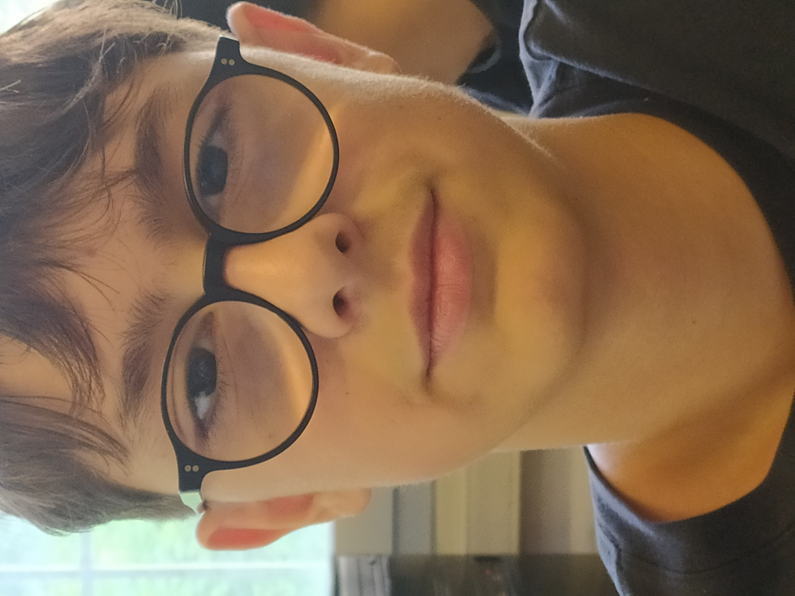

Mi presento.
Sono Federico Boggio e inizio a studiare html da poco,
compio 15 anni a novembre e faccio parte
della 2CIT e faccio informatica.
Ho scelto questo indirizzoz perch'è ho dei parenti,
in particolare mio zio che mi ha dato una mano in
questo mondo e poi spero dopo il diploma di fare
quello che sopgno cioè il programmatore di pagine web.
Sono nato a Torino ma vivo a Nichelino.
Sono un ragazzo dolce che ha voglia di
impegnarsi,
cerco sempre di dare il mio meglio
a scuola per crearmi un futurp
Ho diverse passioni le principali sono
lo stadio e andare in moto.